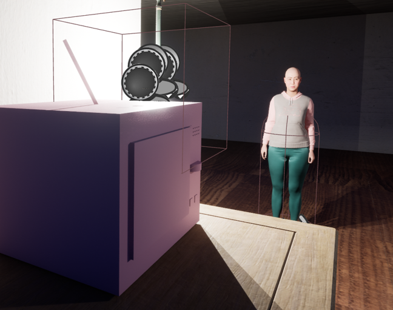

2024 · 3D Workflow
猫的摄影测量与程序化工作流
Cat Photogrammetry and Procedural Workflow
可查看 / View Project
从摄影测量重建到 Houdini 程序化处理和三维打印的连续工作流。
One continuous workflow from photogrammetric reconstruction through procedural Houdini work to 3D printing.
Selected Work
Projects
从空间研究与数据叙事，到生成式影像、实时视觉、游戏原型和物理计算。
Work spanning spatial research and data storytelling, generative imagery, real-time visuals, game prototypes, and physical computing.
2024 · 3D Workflow
Cat Photogrammetry and Procedural Workflow
可查看 / View Project
从摄影测量重建到 Houdini 程序化处理和三维打印的连续工作流。
One continuous workflow from photogrammetric reconstruction through procedural Houdini work to 3D printing.

2024 · Urban Research / Mapping
The Working Classes of Great American Cities
可查看 / View Project
通过地图重新检视美国大都市阶层结构及其空间分布。
A mapping project revisiting class structure and spatial distribution in major American cities.
2024 · Environment Design
Dreamcore Classroom
可查看 / View Project
以 SketchUp 和 Substance 3D Stager 构建现实、云层、迪斯科与遗迹四种教室变体。
A Dreamcore environment study developed across real, cloud, discotheque, and relic classroom variants.

2024 · Generative AI / Exhibition
AI for Humans
可查看 / View Project
让生成式 AI 同时成为图像生产工具、叙事对象与展览主题的策展实验。
An exhibition concept treating generative AI as an image-making tool, narrative subject, and theme.

2024 · Projection Mapping
Cosmic Projection Narrative Prototype
可查看 / View Project
基于 TouchDesigner、故事板、投影形状与节点网络的太空主题视觉叙事实验。
A space-themed visual narrative built with TouchDesigner, storyboards, projection shapes, and node networks.

2024 · Game Design / UE5
UE5 RPG / Social Simulation Prototype
可查看 / View Project
围绕少女偶像、城市生活系统和政治与社会张力展开的个人游戏原型。
A solo game prototype centered on girl-idol characters, urban life systems, and political and social tensions.

2024 · Physical Computing
Microcontroller Magic Wand Prototype
可查看 / View Project
用 CircuitPython、传感器、LED 与音频反馈完成的单片机交互原型。
A microcontroller interaction prototype using CircuitPython, sensors, LEDs, and audio feedback.